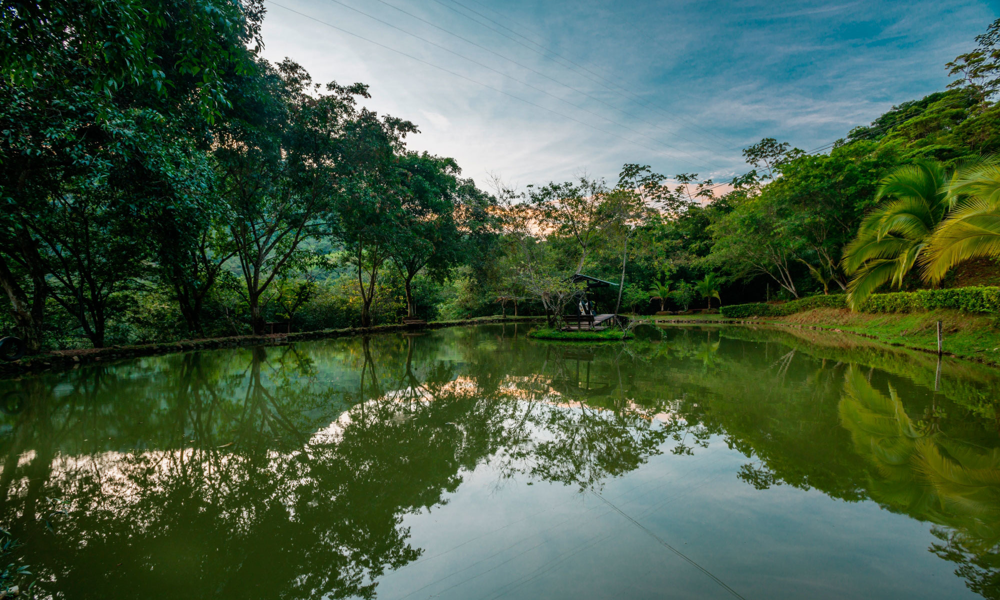
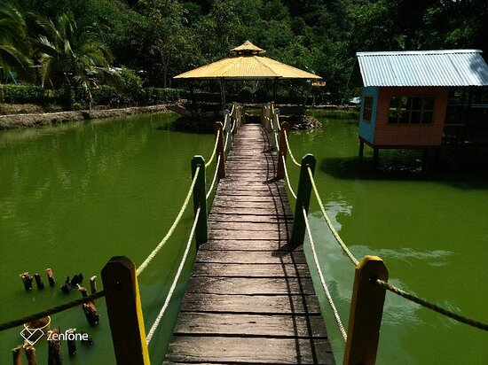
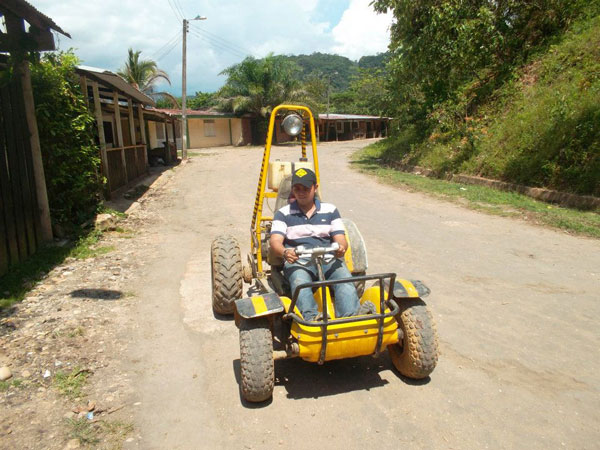

Ecoparque La Calera



El Ecoparque La Calera es un espacio dedicado a la conservación y educación ambiental, ideal para disfrutar de un día en familia. Con senderos rodeados de naturaleza y áreas recreativas, este ecoparque ofrece actividades como senderismo, avistamiento de aves y talleres educativos. La Calera es un lugar perfecto para aprender sobre la flora y fauna locales mientras te conectas con la naturaleza en un entorno amigable y sostenible.